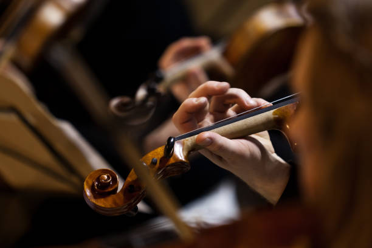

Harmonia em Cena
Local: Atrio
Data: 21/08 (seg) - 19h30 às 20h30
No cinema e em animes, um show à parte é sempre a trilha sonora, então nada melhor para iniciar essa semana cheia de diversão do que uma linda apresentação de temas da cultura pop, interpretados ao vivo em nossa unidade. Venha se divertir, relembrando temas que marcaram época e nos acompanharam por tantas aventuras. Com a Orquestra Sinfônica Asaph